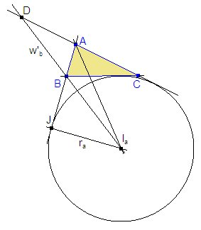
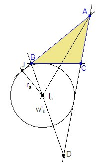
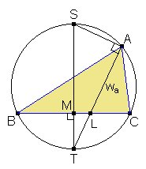
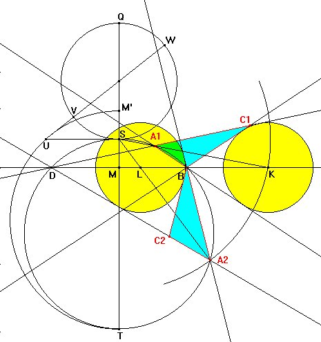

|
Construir un triángulo conociendo A, w'b (bisectriz exterior del ángulo B) y ra (radio de la circunferencia exinscrita correspondiente a A). |
|
Propuesto por Luís Lopes
|
Solución Francisco Javier García Capitán
 |
 |
|
Figura
1
|
Figura
2
|
Análisis
Supongamos el problema resuelto. En las figuras 1 y 2 vemos cómo la bisectriz interior de ángulo A y la bisectriz exterior del ángulo B se cortan en el excentro Ia. También hemos situado los puntos J, proyección ortogonal de Ia sobre AB y D, intersección de la bisectriz exterior de B con la recta AC.
Observamos que en la figura 1 el segmento AIa es la bisectriz exterior del ángulo A en el triángulo ABD, mientras que en la figura 2 el mismo segmento es la bisectriz interior.
Estas figuras sugieren los siguientes pasos en la solución del problema:

Atendiendo a la vez a la figura 2 también podemos construir otro triángulo ABD en el que conocemos el ángulo A, el lado opuesto w'b y la longitud de la bisectriz interior de dicho ángulo que es AIa. Para esta construcción podemos adaptar la solución de Juan Sapiña en el problema 284, básicamente intercambiando los papeles de los puntos S y T. En efecto, observemos que si A, a y wa son conocidos, entonces haciendo una figura parecida a la del problema 284 tendremos que el cuadrilátero ALMS es cíclico y por ello tendrmeos que TL·TA = TM.TS y que TA - TL = wa.La construcción paso a paso
Detallemos los pasos a seguir con Cabri para obtener las dos souciones:
| Figura 3. Partimos del ángulo A y los segmentos w'b y ra. |
|
||||
|
Figura 4. Fijamos un segmento YZ de longitud ra y trazamos el arco capaz de dicho segmento para el ángulo A/2. Por Z levantamos una perpendicular a YZ y obtenemos X en la intersección con el arco capaz. Entonces el segmento XY medirá lo mismo que el segmento AIa de las figuras 1 y 2. Figura 5. Ahora vamos a construir los triángulos ABD. Para ello fijamos un segmento BD de longitud w'b y construimos los arcos capaces BSD y BTD del segmento BD para los ángulos 180º-A y A, respectivamente. Como se ve en la figura, estos dos arcos pertenecen a la misma circunferencia. |
|
|
 |
|
Figura
6
|
Figura 6. Dibujemos el segmento DB de longitud w'b. Hallamos el punto simétrico M' de M respecto de S y trazamos una semicircunferencia con diámetro TM'. La perpendicular por S a ST corta a dicha semicircunferencia en U. Tendremos SU^2 = SM'·ST = SM·ST. Ahora, si a continuación del segmento TS trazamos la circunferencia con diámetro SQ = XY = AIa, y desde U trazamos por su centro una recta que corta a ésta en V y W, tendremos SU^2 = UV·UW, y por tanto que UV·UW=SM·ST. También es UW-WV = VW=SQ=AIa.
Ahora trazando un arco con centro S y radio UW cortamos en K a la recta DB y la recta SK corta a la circunferencia ST en A1, siendo A1K=AIa la tangente exterior del ángulo A1 del triángulo A1DB.
Para obtener la segunda solución hallamos el corte del mismo arco con cetro S y radio UW con la circunferencia de diámetro ST, obteniendo el punto A2.
Para completar las soluciones en ambos casos repetimos lo dicho anteriormente:
Discusión
En la segunda solución, si el punto C2 no cae dentro de la circunferencia de diámetro ST, entonces la solución no es válida ya que el ángulo A2 no es igual al valor dado del ángulo A, sino su sumplementario.